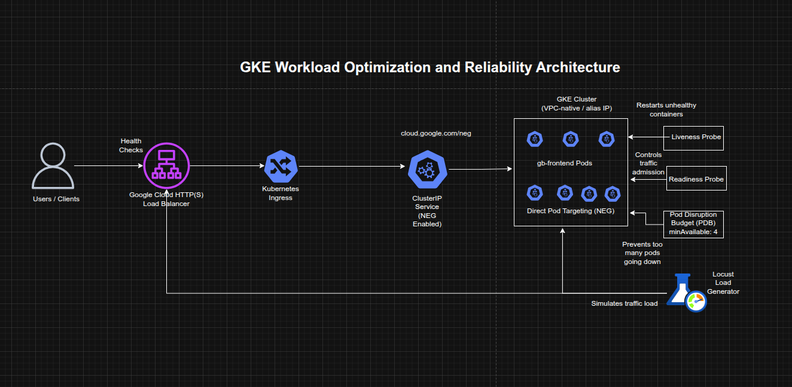

Optimizing GKE Workloads with Container-Native Load Balancing and Reliability Controls
Optimizing GKE Workloads with Container-Native Load Balancing and Reliability Controls
Timeline: December 2025
Role: Cloud Engineer / Site Reliability Engineer
Skills: Google Kubernetes Engine (GKE), Kubernetes Ingress, Network Endpoint Groups (NEGs), Container-Native Load Balancing, Locust, Liveness Probes, Readiness Probes, Pod Disruption Budgets, Availability Engineering
Project Summary
This project focused on improving the efficiency, resilience, and availability of workloads running on Google Kubernetes Engine (GKE). The implementation used container-native load balancing through Kubernetes Ingress and NEGs, load-tested the application to understand real usage patterns, configured liveness and readiness probes for safer traffic handling and self-healing, and applied Pod Disruption Budgets to reduce downtime during voluntary disruptions.
The project demonstrated how GKE workload optimization is not only about resource sizing, but also about improving traffic flow, health-aware routing, and disruption tolerance.
Objectives
- Create a container-native load balancer through Ingress
- Load test an application to observe runtime capacity
- Configure liveness probes for container self-healing
- Configure readiness probes for safe traffic admission
- Apply Pod Disruption Budgets to improve availability during voluntary disruptions
Architecture Overview
The architecture consisted of:
- A GKE cluster with VPC-native / alias IP networking enabled
- A frontend application (
gb-frontend) initially deployed as a single pod - A ClusterIP service annotated to enable Network Endpoint Groups (NEGs)
- A Kubernetes Ingress that created a Google Cloud HTTP(S) Load Balancer
- Container-native load balancing targeting pods directly through NEGs
- A Locust-based load testing setup with one main service and multiple workers
- A liveness probe demo pod for restart behavior validation
- A readiness probe demo pod and LoadBalancer service for traffic gating validation
- A replicated
gb-frontenddeployment protected by a Pod Disruption Budget (PDB)

Implementation & Highlights
1. Provisioning the GKE Environment
- Created a three-node GKE cluster with
--enable-ip-alias - Deployed the
gb-frontendweb application as an initial single pod -
Prepared the environment for container-native load balancing and workload optimization testing
2. Container-Native Load Balancing Through Ingress
- Created a
ClusterIPservice annotated withcloud.google.com/neg - Created an Ingress resource to expose the application
- Triggered provisioning of:
- a Google Cloud HTTP(S) Load Balancer
- zonal Network Endpoint Groups (NEGs)
- Verified backend health using the Compute Engine backend service health check
- Enabled direct pod-level traffic targeting, reducing extra network hops compared with node-based routing
3. Load Testing the Application
- Built and stored a custom Locust image in the project container registry
- Deployed Locust main and worker pods to generate traffic
- Simulated moderate and burst traffic scenarios against the frontend service
- Observed CPU and memory behavior of the
gb-frontendpod under load - Established a more realistic baseline for future decisions around requests, limits, and autoscaling strategy
4. Liveness Probe Configuration
- Created a demo pod with an exec-based liveness probe
- Used the probe to monitor the existence of a file in the container filesystem
- Simulated failure by removing the file
- Observed Kubernetes detect the unhealthy state and restart the container automatically
- Demonstrated self-healing behavior for failed but still-running containers
5. Readiness Probe Configuration
- Created a demo pod with an exec-based readiness probe and exposed it through a LoadBalancer service
- Verified that the service did not route traffic while the readiness condition was failing
- Created the required file inside the container to satisfy the readiness probe
- Confirmed that the pod became Ready and traffic began flowing successfully
- Demonstrated health-aware traffic admission and safer service exposure
6. Pod Disruption Budget for Application Availability
- Replaced the single frontend pod with a 5-replica deployment
- Drained cluster nodes to observe the impact of voluntary disruption
- Verified that without a PDB, the deployment could temporarily lose all available replicas
- Created a Pod Disruption Budget requiring at least 4 replicas to remain available
- Repeated the drain operation and confirmed that Kubernetes blocked further eviction when doing so would violate the budget
- Demonstrated controlled availability protection during operational maintenance and node disruption events
Design Decisions
- Used container-native load balancing to improve routing efficiency by letting the load balancer target pods directly
- Used load testing before optimization decisions so changes would be informed by observed workload behavior rather than guesswork
- Configured liveness probes to enable automatic restart of unhealthy containers
- Configured readiness probes to ensure traffic would only reach pods that were truly ready to serve
- Used a Pod Disruption Budget to preserve service availability during voluntary cluster operations such as drain and rescheduling
- Treated optimization as a balance between:
- routing efficiency
- application responsiveness
- health-aware operations
- resilience during disruption
Results & Impact
- Successfully implemented container-native load balancing for a GKE workload
- Measured application behavior under different traffic levels using Locust
- Demonstrated automated container recovery using liveness probes
- Demonstrated controlled service exposure using readiness probes
- Protected a replicated application from excessive disruption during node drain through a Pod Disruption Budget
- Built practical experience in improving both efficiency and availability of Kubernetes workloads
Tools & Technologies Used
- Google Kubernetes Engine (GKE) – Cluster platform
- Kubernetes Ingress – External traffic entry
- Network Endpoint Groups (NEGs) – Pod-level load balancing targets
- Google Cloud HTTP(S) Load Balancer – External application access
- Locust – Load testing framework
- Liveness Probes – Self-healing controls
- Readiness Probes – Safe traffic routing controls
- Pod Disruption Budgets (PDBs) – Voluntary disruption protection
Outcome
This project demonstrates the ability to optimize GKE workload efficiency and reliability by combining better traffic routing, load testing, health-aware pod management, and disruption controls. It highlights practical skills in Kubernetes networking, application health management, and availability engineering, which are highly relevant to cloud engineering, platform engineering, and site reliability roles.